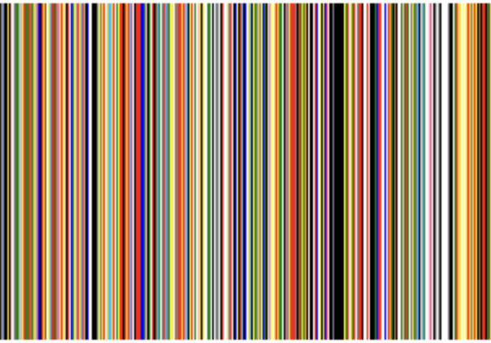
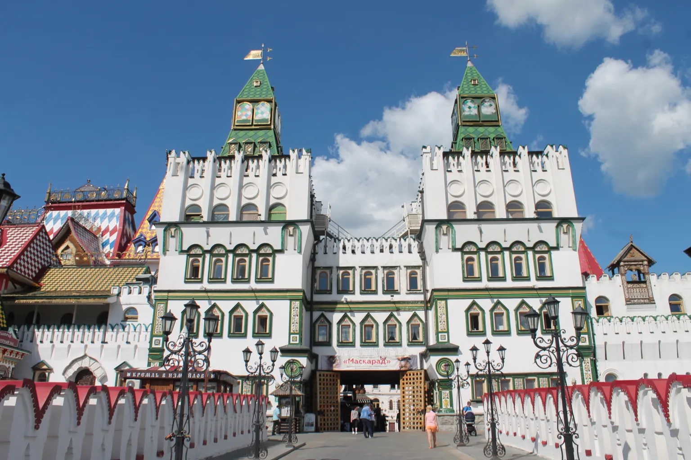

Research
I'm writing a dissertation titled Networked Russian Poetry, 1820s–2020s.
In addition, I also work on:
- Russian poetry, especially contemporary poetry
- Posthumanism
- Innovative pedagogy
You can check out some of my digital work below:

Seeing Chekhov in Color: Visualizing and reading Chekhov's use of color

Material Witnesses in Moscow
Back to Home